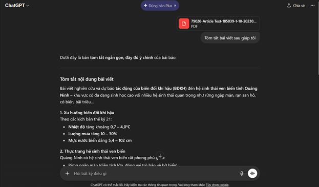
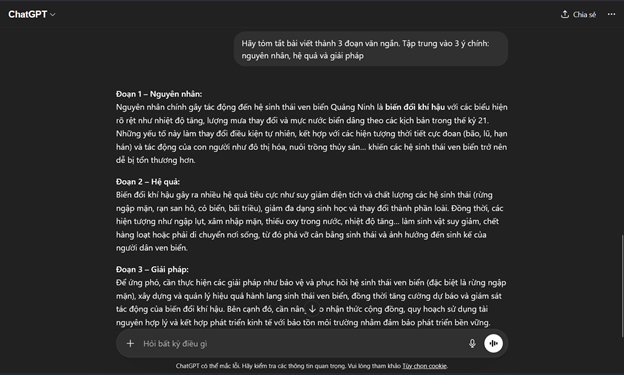
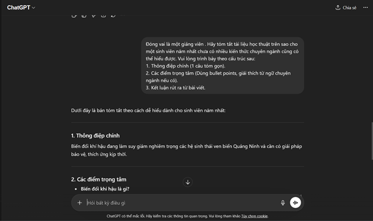
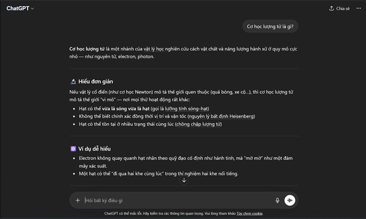
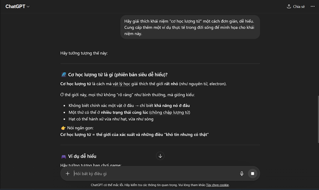
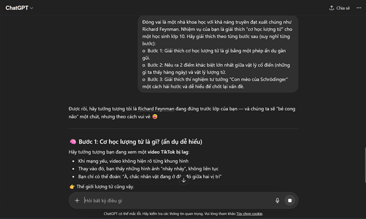

Viết Prompt hiệu quả
Thực hành xây dựng và đánh giá ba phiên bản prompt khác nhau, thử nghiệm với AI và rút ra nguyên tắc prompt engineering hiệu quả.
Thông tin bài tập
Chủ đề: Tác vụ học tập phổ biến với prompt AI.
- Tóm tắt một bài đọc/tài liệu học thuật.
- Giải thích một khái niệm phức tạp.
- Tạo bộ câu hỏi ôn tập cho một chủ đề.
Phiên bản prompt
Prompt cơ bản
Một prompt đơn giản, ngắn gọn, tập trung vào yêu cầu chính.

Prompt cải tiến
Prompt chi tiết hơn, có cấu trúc, yêu cầu đầu ra rõ ràng và ngữ cảnh cụ thể.

Prompt nâng cao
Áp dụng kỹ thuật prompt engineering như role prompting, chain-of-thought và few-shot examples để cải thiện chất lượng đầu ra.

Thử nghiệm và so sánh
So sánh các đầu ra AI dựa trên 3 prompt khác nhau để thấy rõ sự khác biệt về độ chính xác, cấu trúc và tính phù hợp.

Phân tích hiệu quả
Prompt hiệu quả hơn là prompt có bối cảnh rõ ràng, vai trò cụ thể, định dạng mong muốn và ví dụ đầu ra. Những prompt này giúp AI trả lời chính xác hơn và giảm sai lệch.

Nguyên tắc viết prompt
- Rõ ràng về mục tiêu và yêu cầu đầu ra.
- Đặt vai trò cho AI và cung cấp bối cảnh cụ thể.
- Sử dụng ví dụ mẫu (few-shot) khi cần.
- Yêu cầu cấu trúc và định dạng trả lời rõ ràng.
- Kiểm tra và điều chỉnh prompt dựa trên kết quả thực tế.
